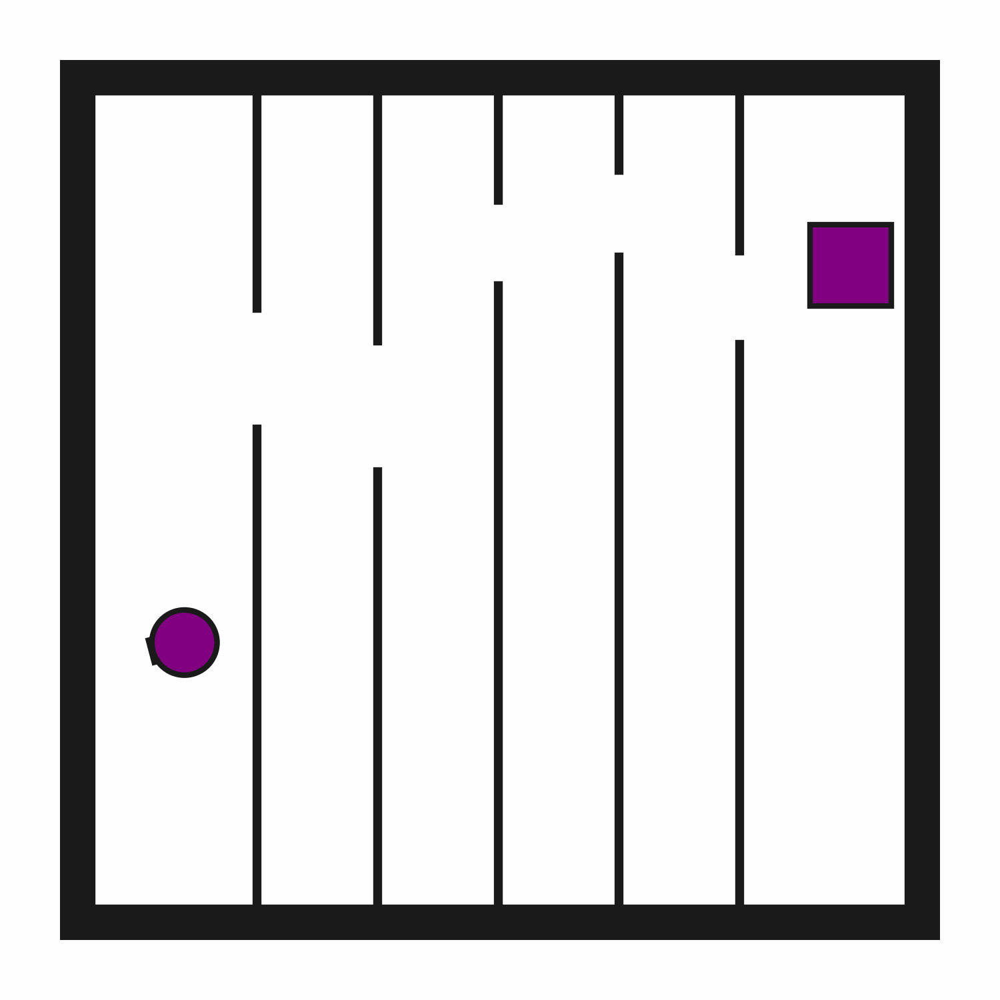

Motion2D
Random Actions
Initial State Distribution
Example Demonstration

Description
A 2D environment where the goal is to reach a target region while avoiding static obstacles. The robot has a movable circular base and a retractable arm with a rectangular vacuum end effector. The arm and vacuum do not need to be used in this environment.
Variants
This environment has 6 standard variant(s). Each variant has a constant number of objects. See the variant pages for detailed descriptions of observation spaces, action spaces, and rewards.
References
Narrow passages are a classic challenge in motion planning.